✦ J’ai constitué mon langage graphique à partir des résultats de mes expérimentations en noir et blanc, à la fois pour renforcer la cohérence entre les signes et pour évoquer un style de caractère. J’ai soutenu cette intention dans la mise en page de l’affiche associée ainsi que dans l’édition, en classant ces signes par graisses.
 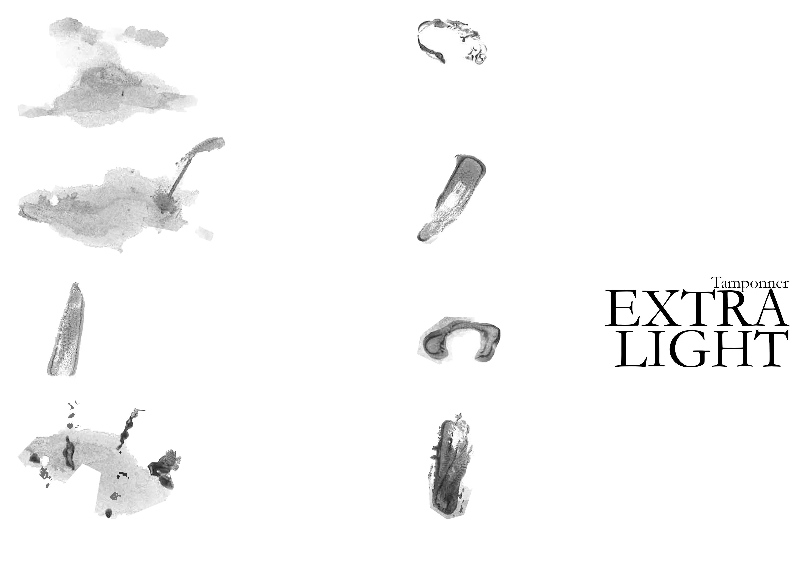
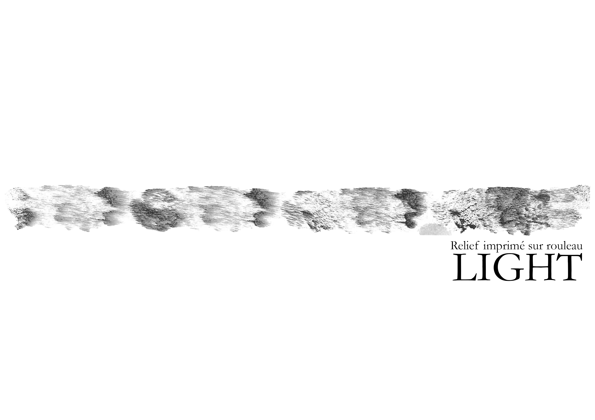
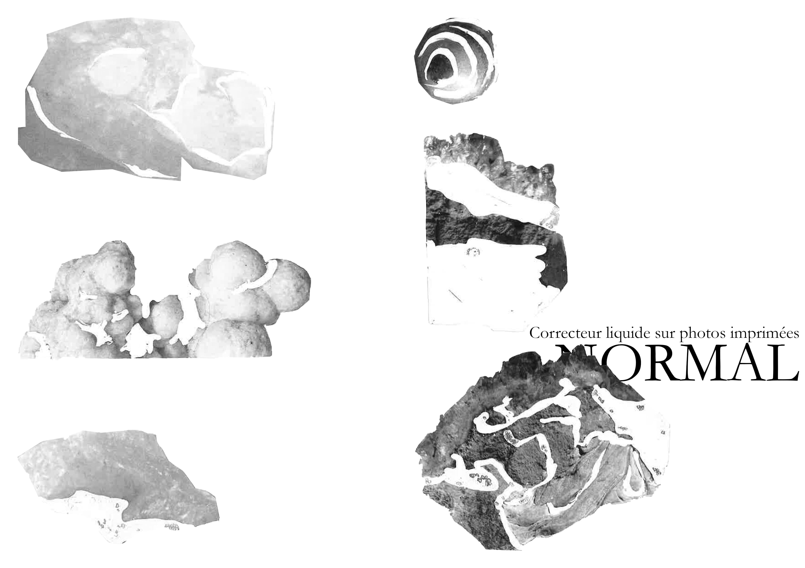
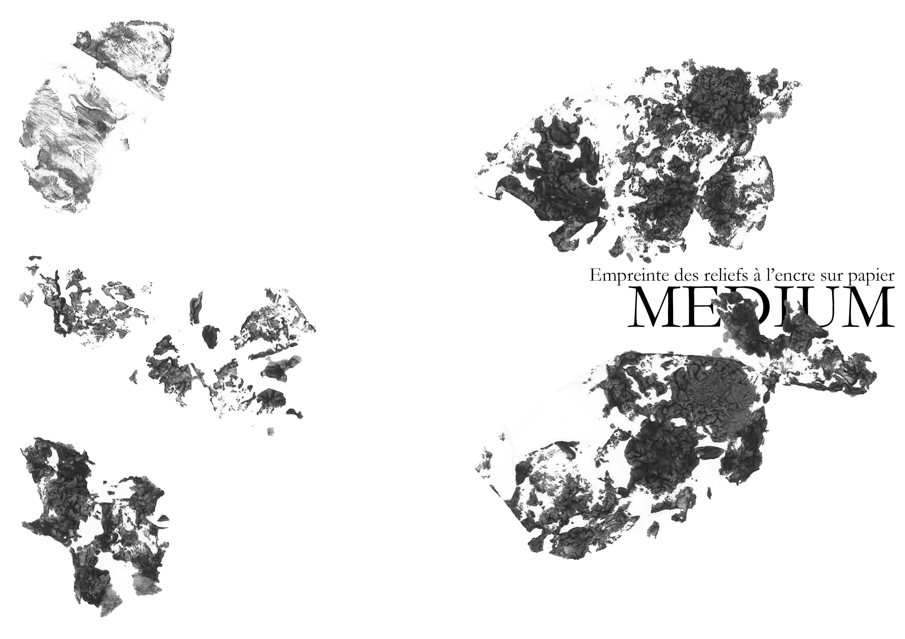
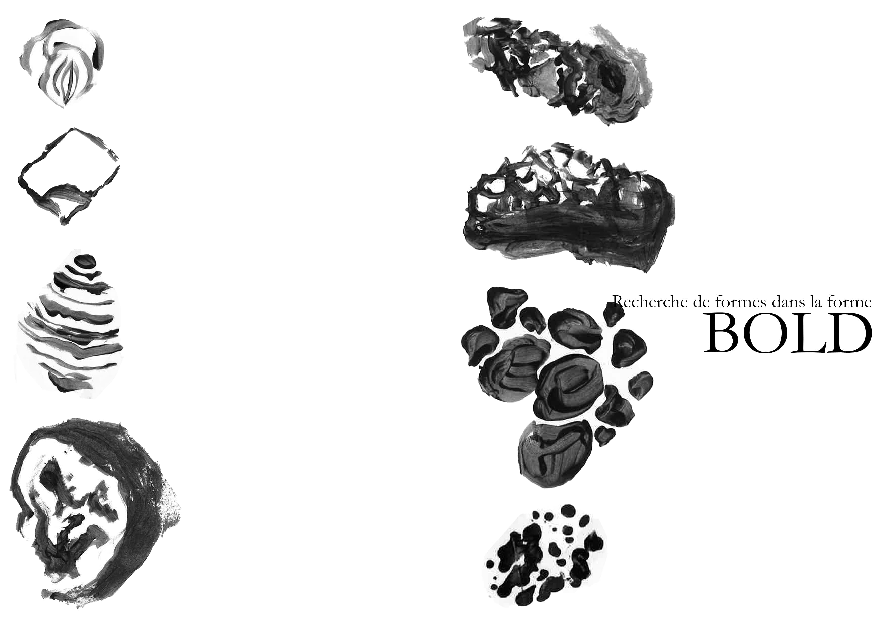
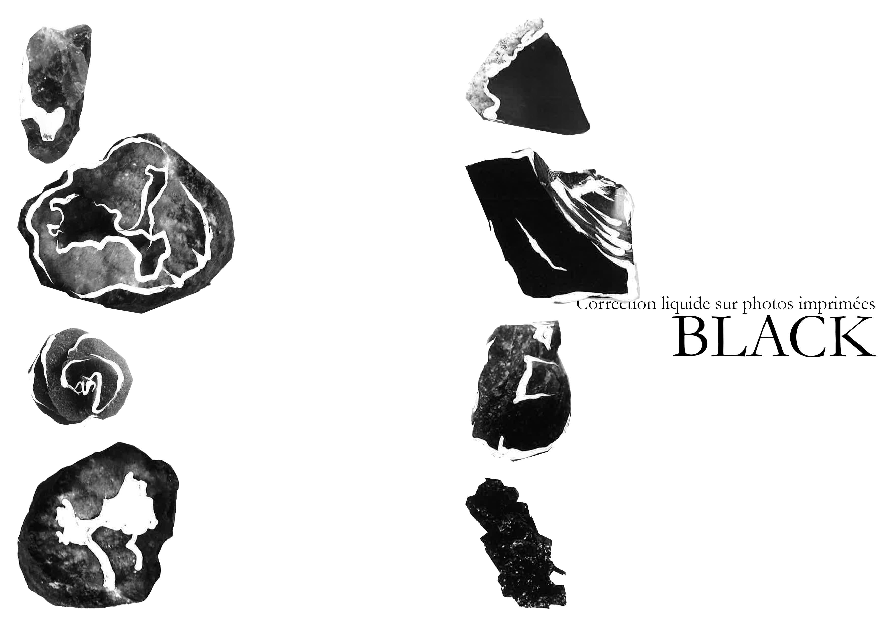
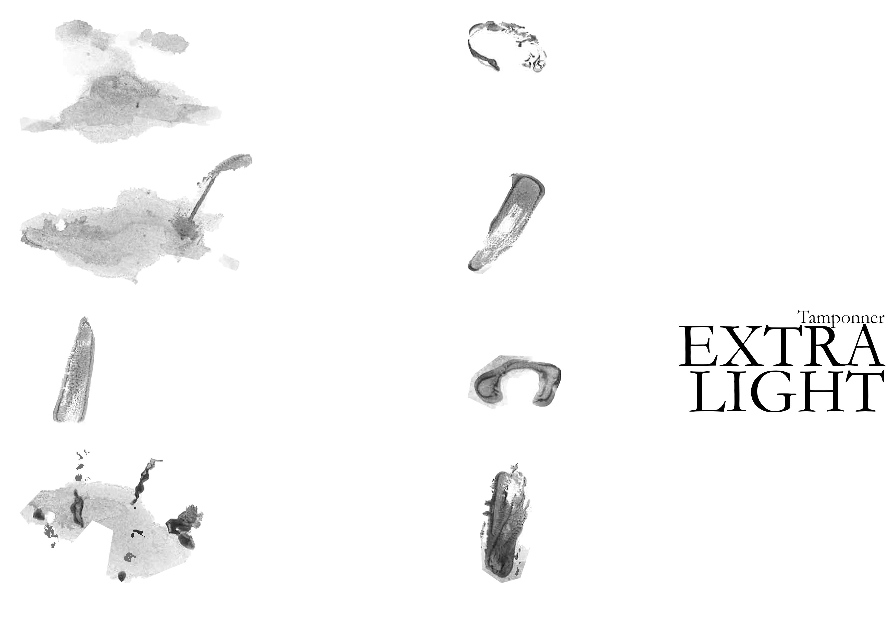
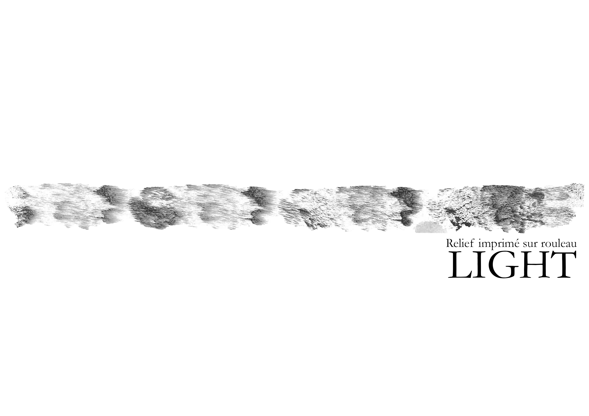
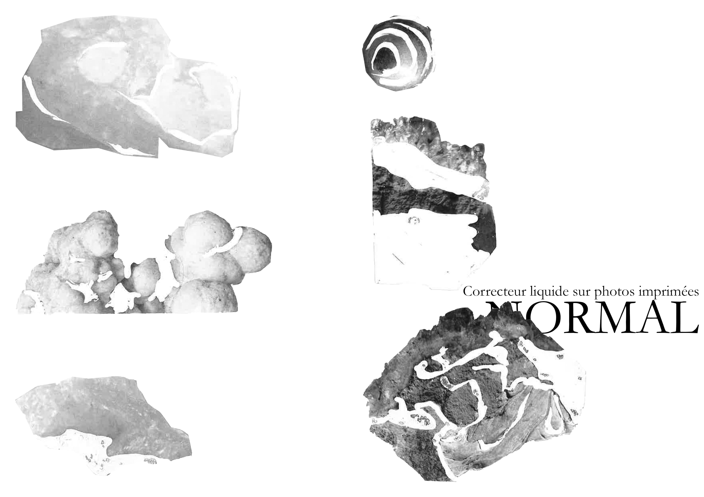
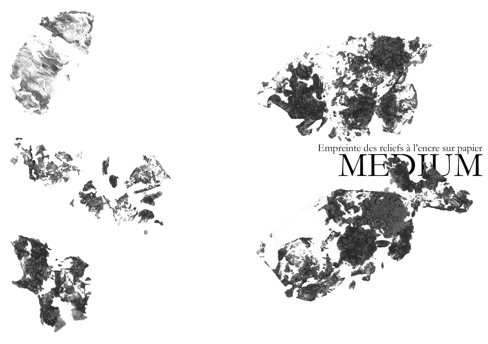
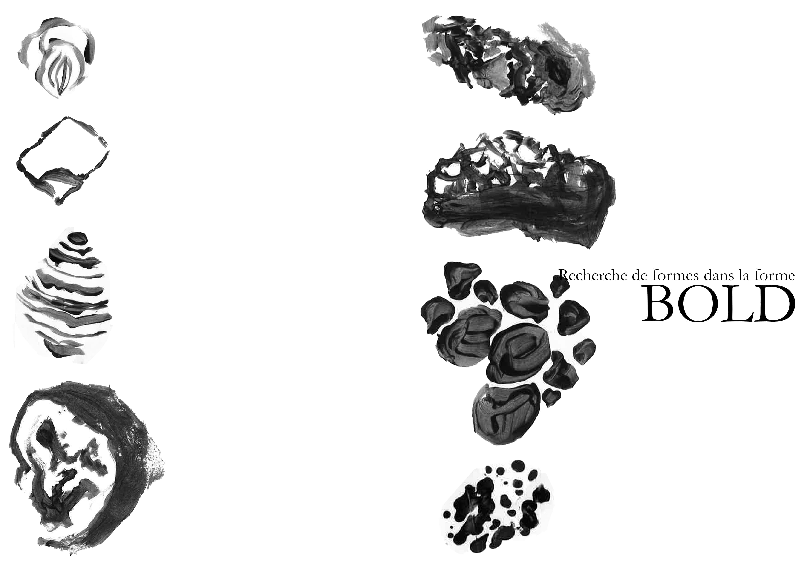
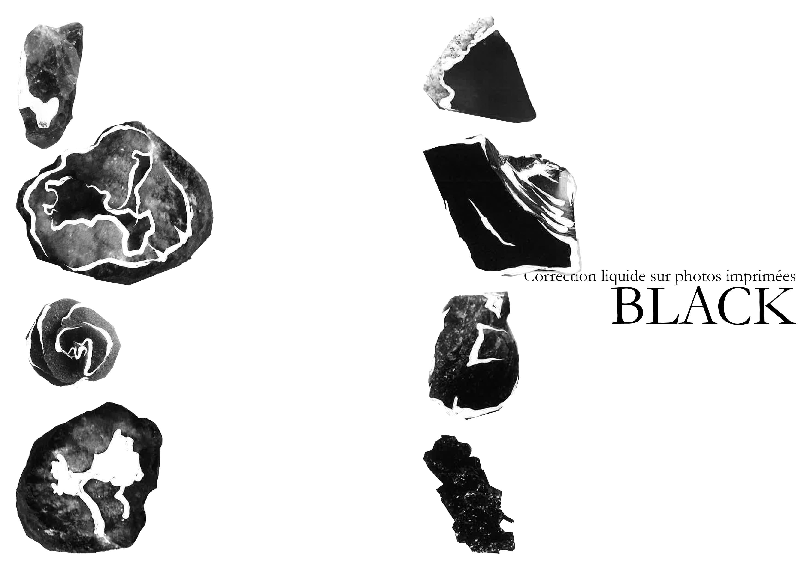
©